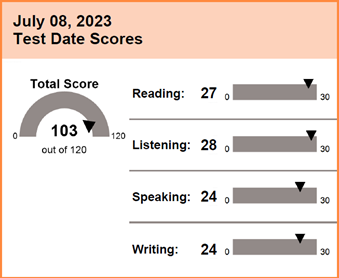

Me he desempeñado en la Universidad en el área de Programación e Implementación en Unity y Diseño,
como Arte Conceptual, Diseño de Personajes y GUI.
Busco poder perfeccionar mis habilidades y
expandir mi conocimiento en el desarrollo de Videojuegos además de otras áreas
como el Diseño Web y Diseño Gráfico.
Educación
Universidad Andrés Bello | Diseño de Juegos Digitales
2019 - Presente
Colegio San Juan de Las Condes | Educación Media
Egresada en 2016
Experiencia Laboral
NEO GAME LAB | Diseño y Modelado de Personajes 3D
2023
INDUSTRIA & MINERIA LTDA. | Servicios a Honorarios en Computación
(Mantención de Computadores, diseño y mantención de página web.)
2017-2020
FUENTE MINERA | Recepción en Congreso CONMINUTEK 2017 y MineLixi
2017.
Competencias
Habilidades Artísticas y de Diseño
Uso intermedio de Adobe (Ps, Ai, Ae y Pr) Habilidades de ofimática
Habilidades comunicacionales
C# Básico
Blender Intermedio
Clip Studio y Procreate Avanzado
Autoaprendizaje
Unity Intermedio
Unreal Intermedio (Blueprints)
Idiomas
Español: Nativo
Inglés: TOEFL
Reading: Avanzado
Listening: Avanzado
Speaking: Intermedio Alto
Writing: Avanzado

Japonés: Básico A2
Certificaciones
Workshop: Interactive Installations and immersive digital spaces,
Storytelling and contemporary visual narratives. |
Beca ServCrea con la Nuova Accademia di Belle Arti
Marzo de 2022
Concept Art Masterclass | Create Conceptual Art from Scratch
Udemy Certificado
Learn Concepting and Character Design with Photoshop
Udemy Certificado
Introducción a Unity para videojuegos 3D
Domestika Certificado